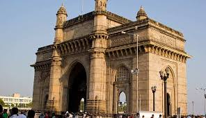

Exploring the Vibrant City of Mumbai: A Travel Blog
Introduction
Mumbai, often referred to as the "City of Dreams," is a bustling metropolis on the western coast of India. Known for its diverse culture, historic landmarks, and the epicenter of Bollywood, Mumbai offers an eclectic mix of experiences. Join me as we explore the many facets of this vibrant city.
Day 1: Gateway to Mumbai
Gateway of India
Start your Mumbai adventure at the iconic **Gateway of India**. This majestic arch monument, built during the British Raj, is located on the waterfront in the Apollo Bunder area. It's a popular tourist spot and offers a stunning view of the Arabian Sea.
Colaba Causeway
Just a short walk from the Gateway, **Colaba Causeway** is a shopper's paradise. Here, you can find everything from trendy clothes and jewelry to antiques and souvenirs. Don't forget to haggle to get the best deals!
Lunch at Leopold Café
No visit to Colaba is complete without a meal at the legendary Leopold Café. Established in 1871, this café is not only famous for its delicious food but also for its role in Mumbai's literary and pop culture.
Day 2: Historical and Cultural Immersion
Chhatrapati Shivaji Maharaj Terminus (CSMT)
Start your day with a visit to **Chhatrapati Shivaji Maharaj Terminus**, a UNESCO World Heritage Site. This historic railway station is a brilliant example of Victorian Gothic architecture and a bustling hub of Mumbai's railway network.
Mani Bhavan
Next, head to **Mani Bhavan**, the former residence of Mahatma Gandhi. Now a museum, it showcases Gandhi's life and the Indian freedom struggle through photographs, letters, and personal artifacts.
Lunch at Britannia & Co.
For lunch, visit the iconic **Britannia & Co.**, a Parsi restaurant known for its delicious Berry Pulao and other traditional Parsi dishes. The vintage décor and warm hospitality add to the dining experience.
Day 3: The Glamour of Bollywood and Beaches
Film City Tour
No trip to Mumbai is complete without a Bollywood experience. Take a guided tour of Film City, where you can see film sets, learn about the filmmaking process, and maybe even spot a Bollywood star in action.
Juhu Beach
In the evening, head to **Juhu Beach**. It's one of Mumbai's most famous beaches, known for its lively atmosphere and street food stalls offering everything from Pav Bhaji to Kulfi. Enjoy the beautiful sunset as you walk along the shore.

Dinner at Peshawri, ITC Maratha
End your day with a luxurious dinner at **Peshawri** in ITC Maratha. Known for its North-West Frontier cuisine, the restaurant offers a range of delectable kebabs, dals, and Indian breads, all cooked in a traditional clay tandoor.
Day 4: Shopping and Nightlife
Linking Road, Bandra
Start your day with some retail therapy at **Linking Road** in Bandra. From high-end boutiques to street stalls, this shopping street offers a variety of options to suit all budgets and tastes.
Haji Ali Dargah
In the afternoon, visit the **Haji Ali Dargah**, a mosque and dargah located on an islet off the coast of Worli. The stunning white marble structure is accessible via a narrow causeway and offers a serene escape from the city's hustle and bustle.
Nightlife at Bandra
End your Mumbai adventure by experiencing its vibrant nightlife. Bandra is home to some of the city's best bars and clubs. Olive Bar & Kitchen and Pali Village Café are great spots to enjoy a drink and unwind.

Conclusion
Mumbai is a city that never sleeps, constantly buzzing with energy and life. From its historic landmarks and cultural treasures to its modern attractions and vibrant nightlife, there's something for everyone in this incredible city. Whether you're a history buff, a foodie, a Bollywood enthusiast, or simply a traveler seeking new experiences, Mumbai promises an unforgettable journey. Happy travels!
Comments